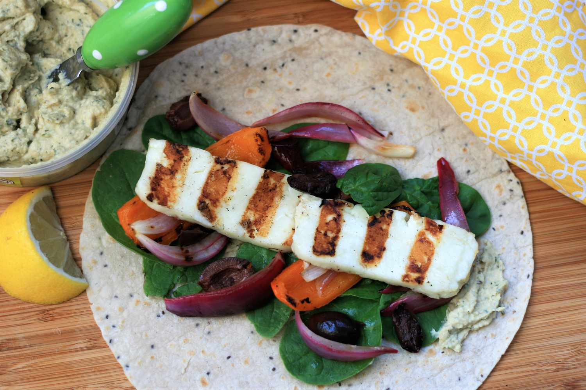
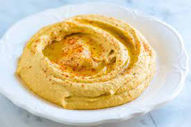
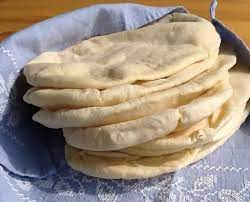
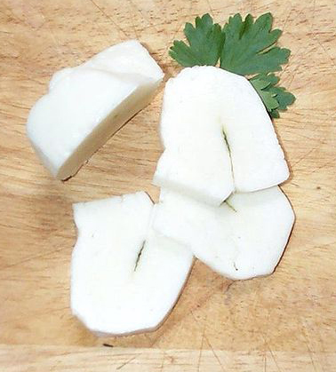

Shopping (unordered) list
This is how the food should look before you make it and on the right is how it should look when done

- Humous

- Pitta

- Green salad

- Halloumi

Recipe of Pitta wraps with salad, humous and fried halloumi
Please remember to clean your cooking station before and after this Recipe.
- Toast pitta, leave to cool, then slice down the edge.
- Fry the halloumi in a shallow, non-stick pan, until browned on both sides.
- Wash and chop the salad.
- Fill pitta with salad, humous, and fried halloumi.
- Put on plate and serve with a drink
Ingredient description list
This is the list of ingredients that are need to create this lovely Recipe
- Humous
- A thick dip/sauce generally made from chick peas blended with tahini, lemon juice, salt, garlic, and other ingredients.
- Pitta
- A soft, slightly leavened flatbread.
- Halloumi
- A semi-hard, unripened, brined cheese with a higher-than-usual melting point, usually made from goat/sheep milk.
- Green salad
- That green healthy stuff that many of us just use to garnish kebabs.